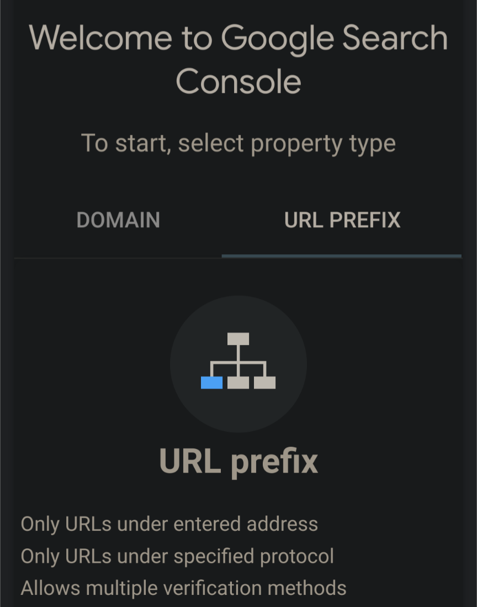
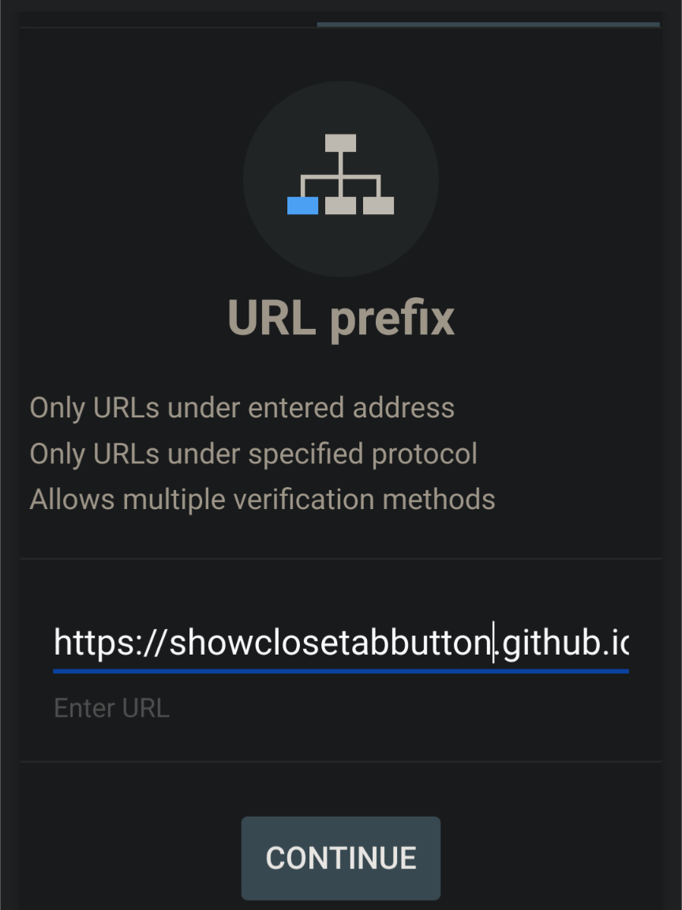
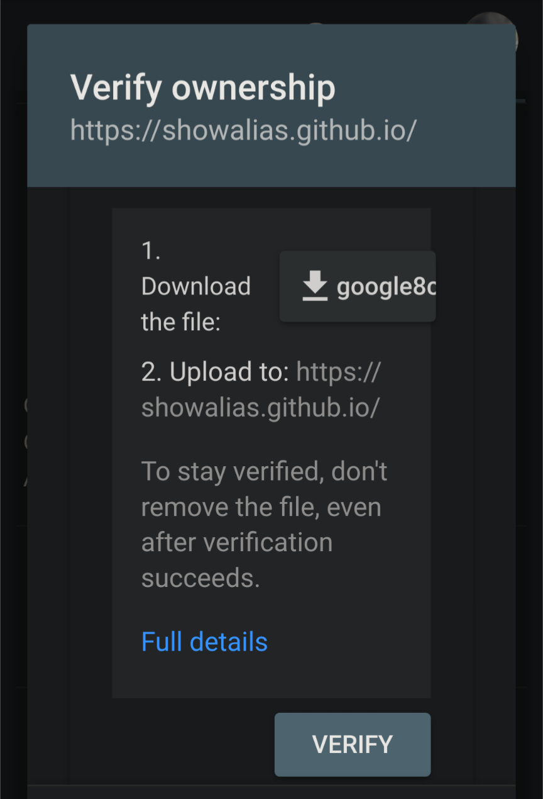

How to add GitHub.io website to Google search console?
Why add GitHub.io to Google search console?
This will allow your website to be found on Google.
Steps to add GitHub.io website to Google search console
- Go to Google search console
-
Select the url prefix,

-
Enter domain into the input box and press the Continue button. For example, enter https://showclosetabbutton.github.io.

-
After downloading the HTML file by pressing the google8c button, upload it to the domain.

- After uploading, go to https://showclosetabbutton.github.io/google8c.html. If the file appears, it means the upload was successful. (The file you downloaded may not be google8c.html, please refer to the file you downloaded.
- Press the verify button. If successful, go to Google search console one day later to confirm whether there is any analytical data for the website.